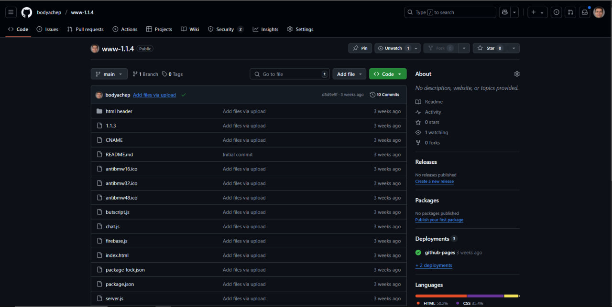
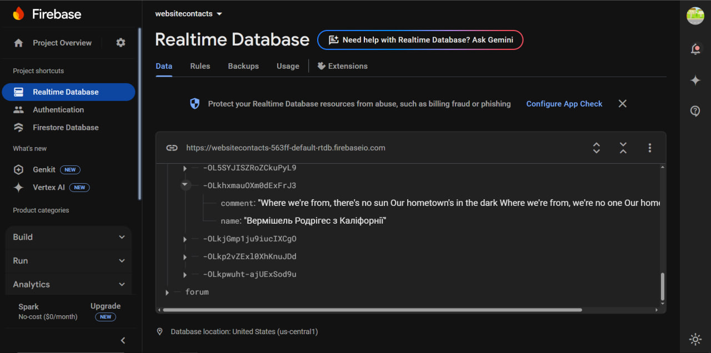
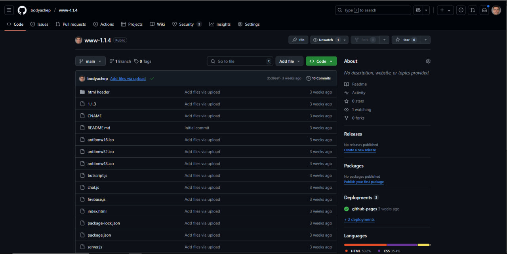
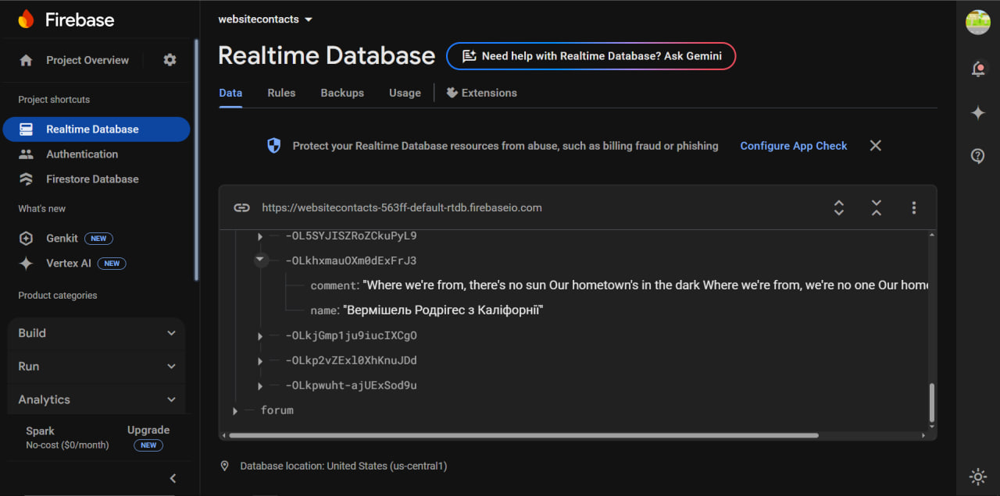

Як я створив сайт за допомогою штучного інтелекту 🤖🌐
Мій перший досвід з ШІ 🏒
Спочатку я просто експериментував із промтами, вивчав, як вони працюють, переглядав інформацію в інтернеті. Потім вирішив створити свій перший серйозний промт. Я задав ChatGPT сценарій: він – досвідчений хокеїст із 40-річним стажем, а я хочу потрапити в його команду. Він повинен був задати мені 10 запитань, і якщо я відповім правильно хоча б на 5 із них, він візьме мене в команду. 🏒💬


Ось як я працюю з ChatGPT на своєму телефоні! 📱💻
Поглиблення в ШІ 🧠
Далі я почав активно вивчати можливості нейромереж. Я створив безліч GIF-анімацій через різні нейросеті, досліджував їхні алгоритми та способи генерації. Деякі з них можна знайти в розділі. Інструменти на моєму сайті... 🎨🤖
Створення сайту з ChatGPT 💻
Після цього я поставив собі мету – створити сайт, використовуючи тільки ChatGPT. На це пішло приблизно два місяці. Увесь процес розробки – від бази даних до дизайну – був виконаний за допомогою штучного інтелекту.
- База даних – використана Firebase від Google. ☁️ firebase
- Хостинг та контроль версій – розгортання через GitHub. 📂 github
- Код, виправлення помилок, верстка – усе було реалізовано за допомогою ChatGPT. chatgpt🖥️
Я писав код власноруч, але штучний інтелект допомагав мені на кожному етапі. Він став моїм справжнім асистентом у всьому – від написання JavaScript-коду до роботи з CSS та HTML. ChatGPT підказав, де знайти домен, як налаштувати хостинг та оптимізувати сайт. 🚀
Життя з ШІ 🤖💡
Я не уявляю зараз життя без штучного інтелекту. Він допомагає в навчанні, розробці, генерації контенту та багатьох інших сферах. Я рекомендую всім використовувати нейромережі, адже вони значно полегшують роботу та відкривають нові можливості. 🔍📚
Скриншоти процесу розробки 📸
 



Як я використовую ШІ у повсякденному житті 🤯
Штучний інтелект став частиною мого життя не тільки в розробці сайту, але й у багатьох інших сферах. Ось як я його застосовую щодня:
- 💡 Допомога в програмуванні – використовую ChatGPT для виправлення помилок у коді, генерації фрагментів та оптимізації алгоритмів.
- 📖 Вивчення нових технологій – нейромережі допомагають швидко знаходити корисну інформацію, пояснювати складні теми простими словами.
- 📝 Генерація контенту – використовую AI для створення статей, постів у блогах та навіть сценаріїв відео.
- 🎨 Графічний дизайн – створюю унікальні зображення, меми та навіть 3D-анімації за допомогою нейромереж.
- 🎮 Ігри та розваги – експериментую з AI для створення інтерактивних історій, чат-ботів і навіть генерації рівнів у іграх.
Мої чати з ШІ 🗨️🤖
Щоб показати, як я взаємодію з штучним інтелектом, ось кілька реальних прикладів моїх діалогів із ChatGPT:
Що далі? 🚀
Я не зупиняюся на досягнутому! У майбутньому планую:
- 🔹 Додати більше AI-функцій на сайт.
- 🔹 Створити власного AI-асистента.
- 🔹 Інтегрувати голосові команди.
- 🔹 Покращити взаємодію з AI через Telegram-бот.
Якщо тобі цікаво спостерігати за розвитком мого сайту та експериментами з нейромережами, підписуйся на оновлення! 🚀💡